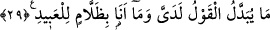

29. Benim huzurumda söz değiştirilmez ve ben kullara asla zulmedici değilim.
“Söz, benim huzurumda değişmez” yani ödüllendirme ve cezalandırma konusunda
sözüm değişmez. Zamanında ortaya çıkan şey ezelde hüküm verdiğim şeydir. O
değişmez. Bazı günahkârların affedilmesi, buna götüren sebeplerden dolayıdır. Yoksa
değişiklik sebebiyle değil. Affın delilleri, cezalandırmanın tahsisine delalet eder. Yani
kâfirler hakkında tahsis edici yoktur. Cezalandırma onlar için umumu üzere bâkidir.
Celal Devvânî Şerhu’l-adud isimli eserinde “Ulemâdan bazıları sözden geri atmanın
ödüllendirme husûsunda değil cezalandırma husûsunda Allah için câiz olduğunu
savunmuşlardır.” demiştir. Bununla aynı minvalde şöyle bir hadis vârid olmuştur. Hz.
Peygamber (s.a.) “Her kim ki birisine ameli için sevap vaad ederse bu onun için
geçerlidir. Her kim ki birisine ameli için cezâ vaad ederse muhayyerlik söz konusu
olur” buyurmuştur. Zira Araplar kişinin bir kötülüğü vaad edip sonra bunu yapmamasını
bir kusur veya sözünden dönme olarak görmezler. Aksine bu asâlet ve fazîlettir. Sözden
dönme, kişinin hayırlı bir iş için söz verip yapmamasıdır. Şöyle demiştir şâir:
Ben onu tehdid etsem söz versem bile
Tehdid geçersiz, söz geçerli olur.
Yahya b. Muaz bu mânâyı şöyle diyerek desteklemiştir: “Vaad ve vaîd haktır. Vaad
kulların Allah üzerindeki hakkıdır. Onu yapmaları durumunda söz verdiği şekilde
vermeyi garanti etmiştir. Allah içinde evlâ olan ahde vefâ göstermektir. Vaîd ise
Allah’ın kullar üzerindeki hakkıdır. “Böyle yapmayın yoksa sizi cezalandırırım” demiş
fakat onlar yapmıştır. Allah isterse affeder; isterse hakkını alır. Çünkü bu O’nun
hakkıdır. Bu ikisi arasında evla olan affetmektir. Zira O affeden, merhametli olandır.
Allah kendisine şirk koşanı affetmez ve müşrikler hakkındaki bu vaîdini uygular. Fakat
bunun dışındakilerden istediğini affeder. Böyle bir durumda mü’minler hakkındaki
vaîdine muhâlefet etmesi câizdir. Hak ehlinin bu hususta ilgili yerlerde zikredilmiş
başka sözleri de vardır. Allah bizleri ve sizleri kendi cezâ ve belâsından korusun. “Ben
kullara zulmedecek değilim” yani onlardan meydana gelen bir günah olmadığı sürece
kullara azap edecek değilim. Ehl-i sünnetin kabul ettiği kaideye göre günah işlemeden
azap etmek Allah için zulüm sayılmadığı halde burada zulüm olarak tabir edilmesi,
kendisinden zulüm namına bir şeyin ortaya çıkmasını imkânsız gösteren bir tasvir
vasıtasıyla Allah’ın bundan tamamen münezzeh olduğunu beyan etmek içindir. Nitekim
zulmün mübâlağa ile belirtildiği bir ortamda Allah’ın kesinlikle günah olmaksızın azab
etmeyeceğinin bildirilmesi bu mânâyı tekid içindir. Bunun çoğul sîgasında olan “kullar”
lafzıyla uyumlu olması için böyle olduğu da söylenmiştir. Mesela “falan kişi
kuluna/kölesine zâlimdir” dendiği halde kullar çoğul olunca bu lafızla uyumlu olması
maksadıyla zallâmun liabîdihî denilir.